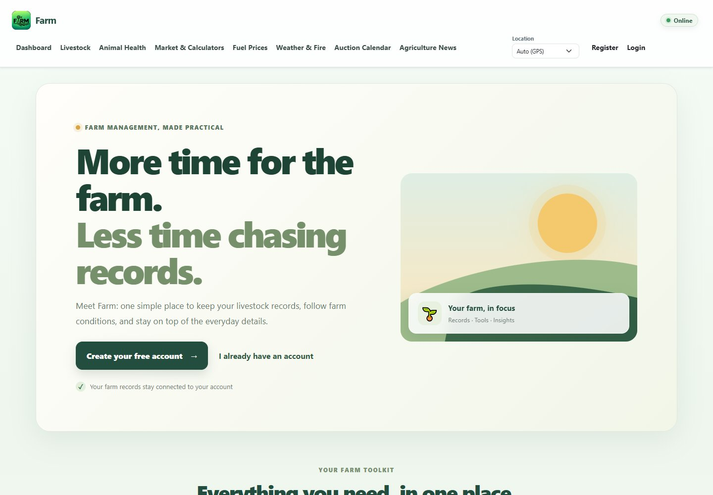
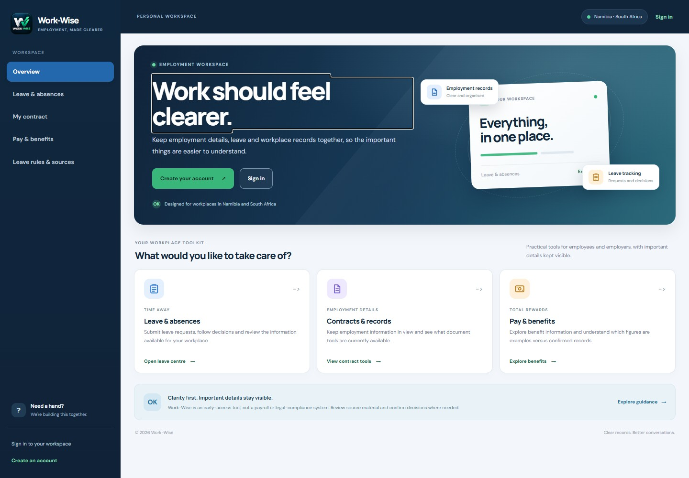
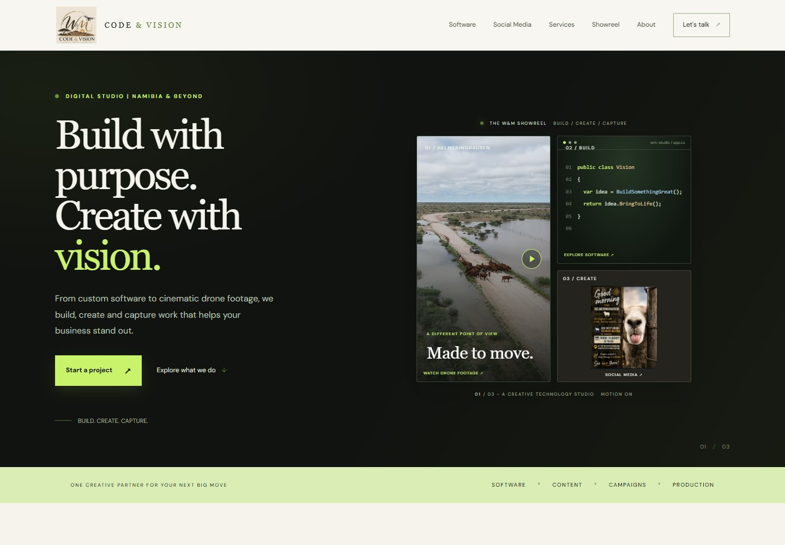

Farm
Livestock, rainfall and feed planning in one practical app. Made for the real work of farming.
Open live Farm appBUILD / SOFTWARE & WEBSITES
Explore our apps, website work and software concepts. Practical tools built around the people who use them.

Livestock, rainfall and feed planning in one practical app. Made for the real work of farming.
Open live Farm app
An early-access employment and leave-management app for workplaces in Namibia and South Africa. Company workspaces bring employee records, leave requests and owner approvals together.
Open live Work-Wise app
Our studio website brings software, social content and aerial production together with project showcases and a direct enquiry form.
Explore the website